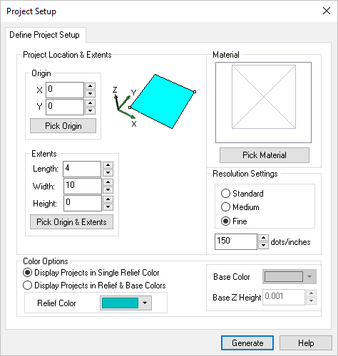

This is the first step required before any relief operation is created. The project setup dialog defines the workspace extents that you will be using. Any further operations which appear outside the workspace setup will be ignored.
 Dialog Box: Project Setup |
You can select the Pick Origin button and the dialog box momentarily disappears to allow you to graphically pick the origin point of the project. Or the numerical value can be entered as well as using the up/down arrows. |
You can select the Pick Origin & Extents button and the dialog box momentarily disappears to allow you to graphically pick the origin and the extents (workspace area) of the project. |
The resolution defines the accuracy used to generate the actual model. The higher the resolution, the better the quality of the output mesh generated. However, increasing the resolution also reduces the relief generation time and above all affects the display. You can use the radio buttons to select Standard, Medium, or Fine. You can also enter the numerical value desired or use the up/down arrows to specify resolution. Standard range is 0-99, Medium range is 100-149, Fine range is 150 and above. Depending on the values entered, the radio button will toggle automatically to the appropriate resolution designation. |
You can select the Pick Material button to specify the material texture desired for the project. With the Material Texture Visibility enabled, the material texture will be displayed on the project and operations. When the Pick Material button is selected, the below dialog box will appear.
|
Display Projects in Single Relief or Relief & Base Colors Here you can select from two color options for your project. Single Relief Color displays the entire project in one Color. You can then select the Relief Color using the color selector. Relief & Base Color displays the project in two colors. Use the Relief Color selector and then also use the Base Color selector. You can also define the Base Z Height of your Project. |